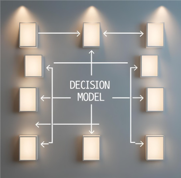

How the Decision Model Works
At SignalFrame, our decision model isn’t just based on trends — it’s grounded in structured foresight. We take weak signals, geopolitical shifts, financial indicators, and social sentiment — and turn them into concrete moves for real people.
Here’s how it works:
- Signal Collection: We scan hundreds of open and proprietary sources daily to identify early indicators of disruption or opportunity.
- Pattern Recognition: Using lightweight AI and domain expertise, we detect patterns before they surface in mainstream media or markets.
- Decision Routing: Based on your responses, we route you toward a recommended decision track — bold, balanced, or cautious.
- Weekly Calibration: Our engine updates weekly, with new signals, shifts in risk, and changing recommendations.
This isn’t fortune-telling. It’s intelligent framing — so you can act before the noise hits.
Why It Matters
Most platforms either drown you in data or sell you empty confidence. SignalFrame bridges the two: informed, signal-backed moves — based on who you are and what you need right now.
Future of the Model
As we grow, our decision engine will evolve to include dynamic filtering, crypto-signal overlays, career path foresight, and regional survival mapping.